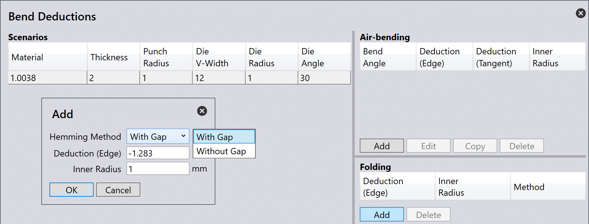

Bend deductions
Bend deductions 用於計算鈑金零件的展開長度[1]。準確生產折彎後具有正確尺寸的零件需要此值。
Bend deductions 考慮了折彎過程中發生的材料拉伸和壓縮。透過使用 bend deductions，TecZone Bend 可以調整平面圖案長度，以確保最終折彎的零件符合指定的尺寸。
Bend deductions 可能因材料類型、厚度、折彎半徑和折彎方法等因素而異。
當將 3D 零件匯入 TecZone Bend 時，軟體會根據零件的幾何形狀和材料屬性自動計算 bend deductions。如果需要，您還可以手動調整 bend deductions 以微調平面圖案長度。
Bend deduction 設定
可以在 Bend Deductions 資料庫中設定自訂 bend deductions。要存取，請按一下 database 圖示並選擇 Bend Deductions。

您可以 Add 新增 bend deduction 場景，或選擇現有場景進行 Edit 編輯或 Delete 刪除。您還可以 Copy 複製現有場景以建 立具有相似設定的新場景。

按一下 Add 以建立新的 bend deduction 場景。選擇並輸入以下參數：
-
Material：選擇 bend deductions 適用的材料。
-
Thickness：設定 bend deductions 適用的板材厚度。
-
Punch radius：設定 bend deductions 適用的上模具半徑。
-
V-width type：選擇使用的 V 形寬度測量類型。
-
Die V-width：設定 bend deductions 適用的下模具寬度。
-
Die radius：設定 bend deductions 適用的下模具半徑。
-
Die angle：設定 bend deductions 適用的下模具角度。
按一下 OK 儲存新場景。
此外，選擇一個 bend deduction 場景並按一下 … 選項以檢視更多選項：

-
Graph：顯示折彎角度與 bend deduction 之間關係的圖表。此視覺 化呈現有助於了解 bend deductions 如何隨不同的折彎角度而變化。將游標移動到圖表的 藍色 和 紅色 線上以檢視特定值。

-
Import：允許您從外部 CSV 檔案匯入 bend deduction 資料。
-
Export：使您能夠將目前 bend deduction 資料匯出到 CSV 檔案以進行備份或共用。
-
3rd party：提供從協力廠商軟體或來源匯入 bend deduction 資料的選項。
Bend deduction 類型
TecZone Bend 支援三種類型的 bend deductions：Air Bending、Folding 和 Coining。
每種類型都有自己的參數和計算集，可根據使用的折彎方法準確確定 bend deductions。
Air Bending
Air bending 是一種常見的折彎方法，其中使用沖頭和沖模折彎鈑金而不完全關閉沖模。此 方法允許更大的靈活性，適用於各種材料和厚度。
要為 air bending 新增 bend deductions，請從 Bend Deductions 資料庫中選擇合適的場 景。按一下 Add 以建立新的 air bending deduction 場景並輸入 Bend Angle。

當您輸入折彎角度時，對應的 Deduction (Edge)、ui:962[Deduction (Tangent)] 和 Inner Radius 值將被計算並顯示。
按一下 OK 儲存新的 air bending deduction。
Folding
Folding 或 Hemming 是一種折彎方法，其中使用完全閉合的沖頭和沖模折彎鈑金，從而產 生尖銳的折彎。此方法通常用於較薄的材料，需要精確控制 bend deductions。

要為 folding 新增 bend deductions，請從 Bend Deductions 資料庫中選擇合適的場景。 按一下 Add 以建立新的 folding deduction 場景並選擇 ui:8585[Hemming method]。
按一下 OK 儲存新的 folding deduction。
Coining
Coining 是一種折彎方法，其中鈑金在高壓下被壓在沖頭和沖模之間，從而產生精確和尖銳 的折彎。此方法通常用於較厚的材料，需要準確的 bend deductions。

要為 coining 新增 bend deductions，請從 Bend Deductions 資料庫中選擇合適的場景。 按一下 Add 以建立新的 coining deduction 場景。
按一下 OK 儲存新的 coining deduction。